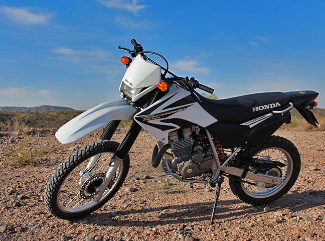

Honda Wave-S
HONDA NEW WAVE 110 S NUEVO DISEÑO Renovada por completo, sus líneas aerodinámicas proyectan un estilo más deportivo y moderno. MOTOR Su motor 110cc refrigerado por aire, brinda mayor eficiencia en tus viajes, además de una mayor durabilidad y resistencia.
CONFIABILIDAD Con la historia de ser unos de los modelos insignia del segmento Cub de Honda, la New Wave te brinda toda la tranquilidad y confianza de la marca, reflejadas en una mayor resistencia y vida útil del producto. MAYOR DURABILIDAD Fabricada con excelentes materiales, su comprobada durabilidad se refleja en una mayor vida útil de la moto, seguridad y confort de manejo.
FACILIDAD DE MANEJO Cuenta con una excelente maniobrabilidad gracias a su cuerpo ligero, que sumado a su asiento doble, la convierten en la opción ideal para moverte por la ciudad todos los días. ARRANQUE ELÉCTRICO Además del arranque a patada, incorpora el nuevo arranque eléctrico,
una opción más fácil y rápida para encender tu Wave.

Honda Tornado
La potencia y versatilidad de la Honda XR 250 Tornado la convierten en una motocicleta con dos personalidades que conviven en perfecta armonía.
Se desplaza con total naturalidad en el día a día como una ágil moto de calle
y ofrece una increíble explosión de adrenalina en cada salida off-road.
Incorpora un nuevo diseño de gráficas en sus deflectores laterales en forma de V, tablero 100% digital y suspensión trasera PRO-LINK que le otorga más tracción sobre cualquier tipo de terreno.
Con un potente motor DOHC de 249 cm3, con doble árbol de levas refrigerado por aire y una caja de 6 velocidades que le permiten explotar al máximo su desempeño.
La dualidad de la nueva Honda XR 250 Tornado es una excelente elección para quienes
buscan el equilibrio justo entre movilidad y nuevas experiencias.
